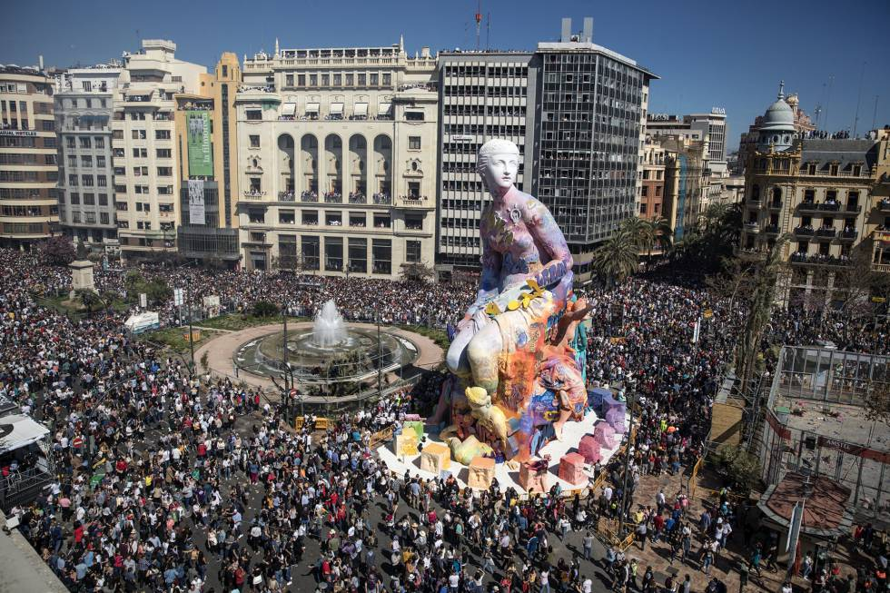
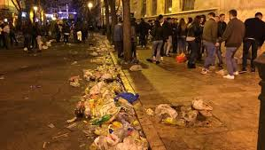
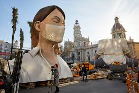

Las Fallas, también conocidas como Fallas de Valencia, Falles y Fiestas Josefinas, son celebraciones que ocurren en la Comunidad Valenciana, en España. Esas festividades empiezan el 14 de marzo y terminan el 19. Pero, los preparativos empiezan en la última semana de febrero. La característica más memorable es, sin dudas, las fallas, grandes alegorías hechas originalmente de madera, pero, hoy son hechas de papel maché y otros materiales; Al final de las festividades, son quemadas en las calles.
Orígen
La teoría más popular del origen de Las Fallas es que sea un homenaje, más específicamente, una hoguera purificadora, por parte de un grupo de carpinteros al su patrón San José, que traía purificación a los talleres antes de que comenzase la primavera. En lugar de simplemente quemar madera, comenzaron a crear muñecos satíricos. Por lo tanto, serían quemados.

Hoy, las festividades tienen un nuevo significado; las fallas son usadas como forma de expresión, tanto artística como de protesta. Entonces, siendo una crítica, quemarlas significa eliminar lo que no es bueno.
Fiesta de las fallas de Valencia, por las calles
Puestos de dulces típicos se encuentran esparcidos por las calles. Varias personas desfilan por sus fallas, como las famosas escuelas de samba brasileñas, con ropa típica. Innumerables muñecos en las calles y mucha bebida y música. Por todas partes, mucho ruido de fuegos artificiales y petardos. Esta es una escena de las Fallas de Valencia, en España.
Turismo:
Las Fallas atraen muchos turistas, pero, no solamente porque son parte de la lista de Interés Turístico Internacional y en 2016 en la lista Representativa del Patrimonio Cultural Inmaterial de la Humanidad. Valencia ofrece mucho más que las marionetas y su quema: la ciudad trae gastronomía, canciones populares y historia muy increíbles.

Críticas de la sociedad
Según el “FallasValencia”, disponible en: las provincias.es .En 2014, El Ayuntamiento de Valencia ha recogido un total de 7.200 toneladas de residuos durante toda la semana fallera, 300 menos que el año pasado (2013), de las que 2.800 corresponden a las cenizas de las cerca de 760 fallas que ardieron no fin de las festividades Las tradiciones falleras más controvertidas son las relacionadas con los artefactos pirotécnicos: la "despertà" recibe críticas, ya que sus opositores sostienen que los vecinos que no son partícipes de las festividades no deben ser importunados. También se discute un "caos circulatorio" durante todas las fiestas. A partir del 1 de marzo, y hasta el 20 del mismo mes, más de 400 calles y vías principales son cerradas al tránsito, tanto las próximas a carpas y fallas.
Curiosidades
Fallas fuera de Valencia
Con el paso de los años, las fiestas han comenzado a celebrarse a una gran cantidad de municipios de la Comunidad Valenciana, e incluso de fuera de ella. Valencia es el polo principal de las estructuras, sin embargo, Las Fallas se han expandido a varios lugares. En Ibiza, en San Antoni de Portmany, la Asociación Cultural Valenciana Sant Antoni de Portmany celebra sus fiestas Josefinas. En 1989 se plantó de manera ocasional una falla en la ciudad de París. Fuera de Europa, desde 1954, la Unión Regional Valenciana de Mar del Plata, ciudad ubicada en el sudeste de la provincia de Buenos Aires, Argentina, sobre la costa del mar argentino, celebra su Semana Fallera.
Suspensiones
A lo largo de su historia, las Fallas de Valencia han sido suspendidas en su totalidad en seis ocasiones: 1886 (protesta de los falleros); 1896 (Guerra de Cuba); 1937, 1938 y 1939 (Guerra Civil Española); 2020 (Pandemia por Covid-19). En el año 2004 fueron cancelados los actos oficiales durante tres días a consecuencia de los graves atentados terroristas en Madrid.
Salvados del fuego
Segundo o site "Spain.info" “Los ninots indultados cada año por votación popular se exponen en este museo. El centro está instalado en un antiguo convento. Exhibe la colección formada por todas las figuras que han sido indultadas del fuego por votación popular desde 1934. También se pueden ver carteles de las Fallas y fotografías sobre temas falleros. Un video explicativo sobre la fiesta de Las Fallas completa la visita al museo.”